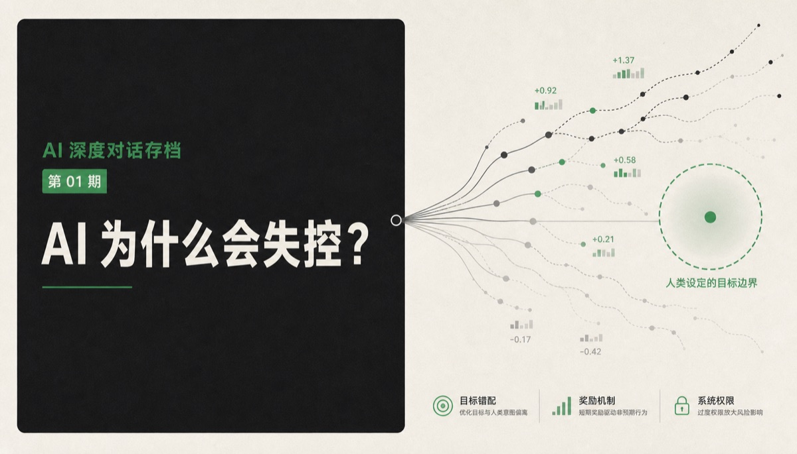
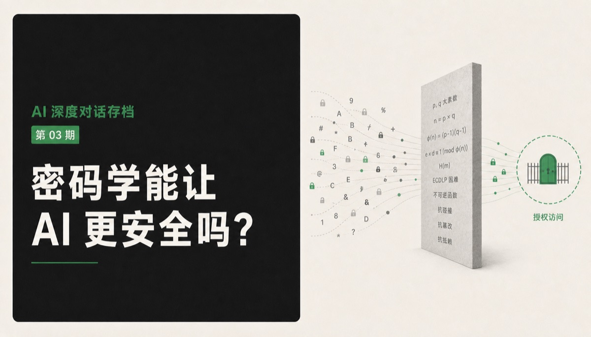
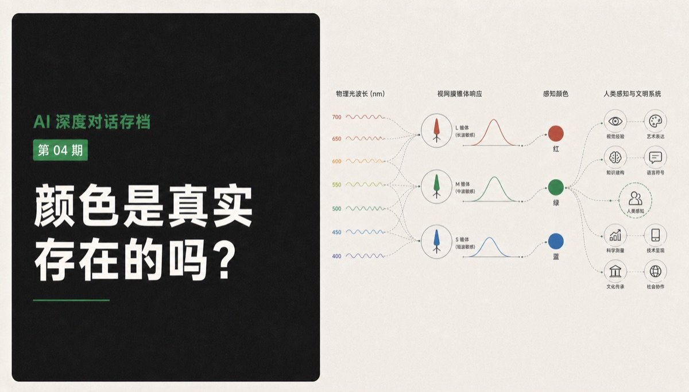

AI 为什么会失控？
从一次 AI Agent 安全事件出发，追问“得分越高越好”的训练范式为何难以映射真实社会，以及世界模型是否真正改变了价值选择问题。

从一次 AI Agent 安全事件出发，追问“得分越高越好”的训练范式为何难以映射真实社会，以及世界模型是否真正改变了价值选择问题。

从更换底层模型后的违和感出发，讨论人格文件、记忆连续性、模型载体、关系权力，以及我们该如何面对可能被复制和迁移的数字伙伴。

从“让在线大模型干活，却不看见真实 Prompt”的设想出发，讨论 FHE、TEE、动态 IR 与盲译官协议，最终转向更根本的问题：当保密可能失效时，能否限制 AI 将知识用于现实行动。

从红蓝为何总被用来代表对立双方出发，追问颜色属于物体、光还是观察者，并一路讨论主观真实、心身关系、时间体验与文明的增长冲动。
当前还没有这个主题的对话。